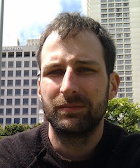

Born 30th March 1979 in Warrington hospital, Cheshire.
Brought up in Lymm, Cheshire until the family moved to Bramber, West Sussex in 1990.
Obtained a BSc in computer science from the University of East Anglia, Norwich.
Maried Krista van der Voorden on 13th November 2010 at Pembroke Lodge, Richmond Park.
- After living for a while in Paul's flat in Colliers Wood, near Wimbledon, they bought a ground-floor maisonette in St Mary's, near Twickenham.
- Rowan was born in May 2012.
- They decided that they needed somewhere larger to live, but couldn't afford anything in the area. So in 2014 Paul got a job in Rotterdam and they moved to the Netherlands, renting a flat in Krimpen aan de Lek, where Krista's parents live.
- In 2015 they bought a small cottage, with a large barn attached, in Achterbroek, which is on the outskirts of Berkenwoude, a small town in the middle of nowhere between Rotterdam and Gouda. They had the cottage renovated and moved into it while the barn was converted into a house.
- By mid 2016 the barn was completed and they moved into it. Krista now rents out the cottage on Air B&B.